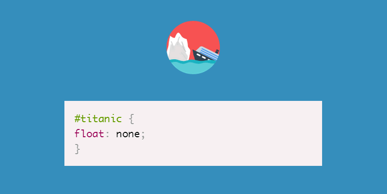
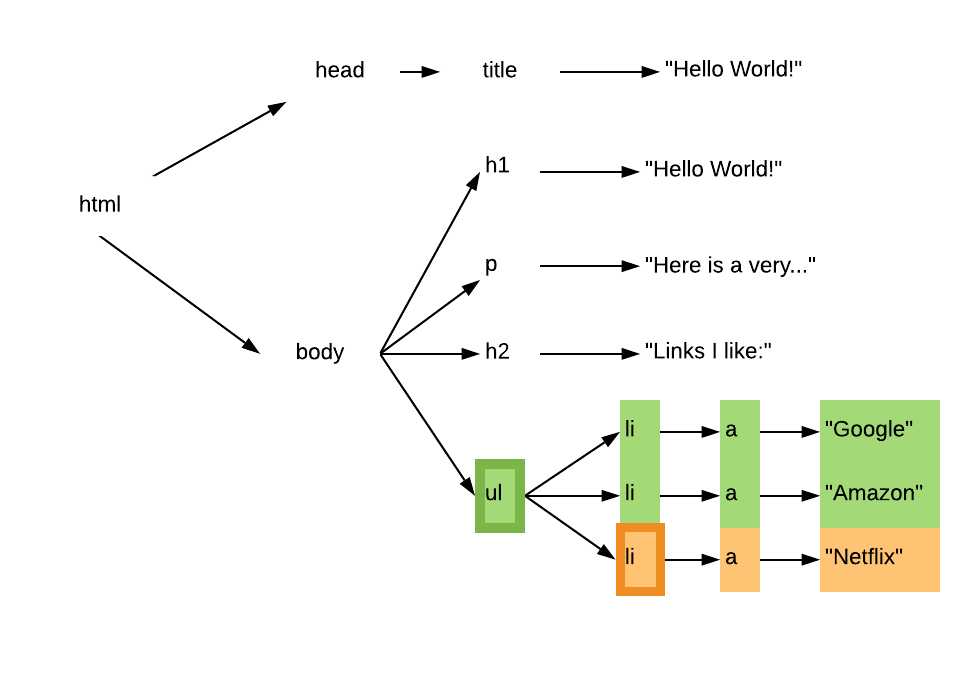

Lecture 13: HTML & CSS, Part II
CSS
Remember our simple page?
<!doctype html>
<html lang="en">
<head>
<title>Hello, world!</title>
</head>
<body>
<h1>Hello, world!</h1>
<p>Here is a very small and simple document.</p>
<h2>Links I like:</h2>
<ul>
<li><a href="http://google.com/">Google</a></li>
<li><a href="http://amazon.com/">Amazon</a></li>
<li><a href="http://netflix.com">Netflix</a></li>
</ul>
</body>
</html>
And remember the document object model (DOM) representation as a tree?

Browsers expose two ways for web
developers to do things with the DOM
- JavaScript: interaction & dynamically modifying the HTML tree
- Cascading Style Sheets (CSS): styling elements in the HTML tree
CSS
- Not a programming language; a "stylesheet language"
- Initial release of CSS circa 1996 (the web is already approx. 5 years old at this point)
- Wasn't widely (and correctly) supported by browsers till early 2000s
- CSS support among browsers has gotten pretty good.
Designed to allow separation of content from presentation
HTML → adding semantic meaning to a text document
CSS → adding presentational information to an HTML document
What do we mean by styling?
- Typography
- Color
- Layout
- Spacing & positioning
- Borders
- inline vs. block
Consider <h1>: it's for indicating the most important heading.
"Important" doesn't imply anything about color, typeface, size, etc.
Context & Presentation May Vary
...but content stays the same.
Separating presentation info into its own CSS file also makes the HTML far less cluttered and allows for far more control over how things look with less code.
How does CSS work?
- write a rule that matches some part of the DOM tree
- specify attributes that style the matched nodes
- Style is applied to the matched nodes and all their children
- More specific rules always override less specific ones
- Source of rule also determines precedence...
- (...that's the cascading part)
RULE: Text in unordered lists should be green!


RULE: The last <li> in a list should be orange.

Universal selector
* {
color: green;
}
Element selector
li {
color: green;
}
Grouping selectors
li, h2, p {
color: green;
}
Selecting descendants
ul li {
color: green;
}
Selecting children
li > a {
color: green;
}
Pseudo classes
a:hover, li:last-child {
color: green;
}
Is there a way I can designate
elements in my HTML for styling?
YES!
The id attribute is used to specify a unique identifier for a single HTML element
<a href="email:gl26499@umbc.edu" id="email-link">email me!</a>
The class attribute is used to specify a class or grouping for one or more HTML elements
<p class="important" >Here's some important text!</p>
<p>Here's some regular tex!</p>
<p class="important" >And more important text!</p>
idis meant for targeting a single elementclassis meant for targeting multiple elements
Remember: HTML is intended to add semantic meaning to documents, so try to chose you names accordingly.
- Good class names:
important,logo,warning,signup-button - Bad class names:
abc123,redText,paragraph,bold
ID selectors
button#login {
background-color: #c10547
}
(#c10547 is a hexadecimal color code for magenta)
class selectors
.pagination {
width: 500px;
}
Units of measurement should generally be in pixels (px). There are others, but they are more complex to work with.
Remember this ugly thing?
Let's make it look nicer...

View the HTML and CSS here.